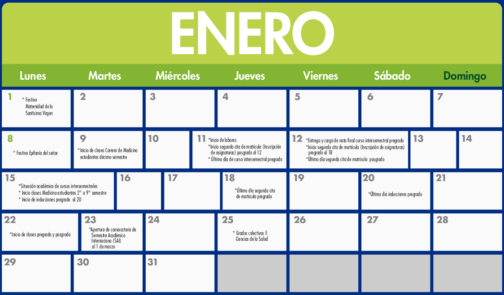
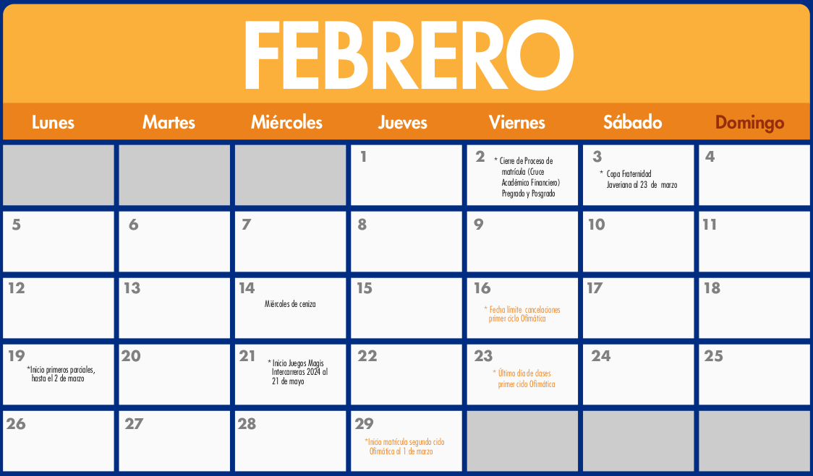
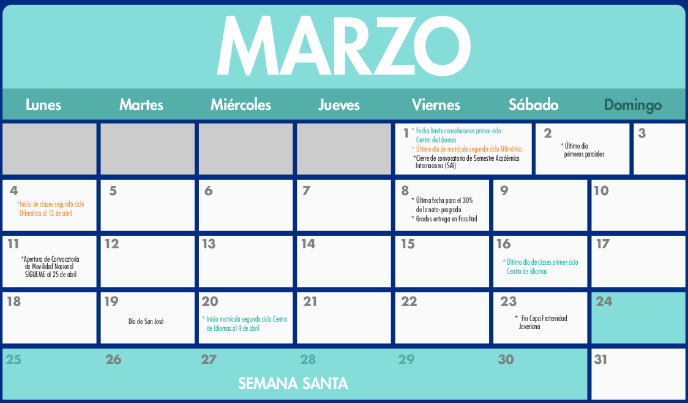
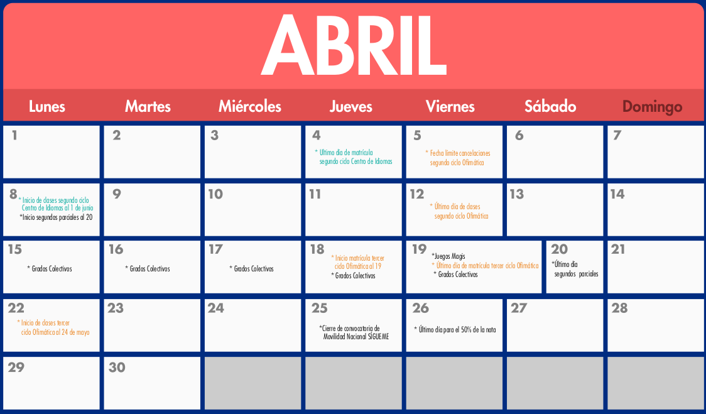
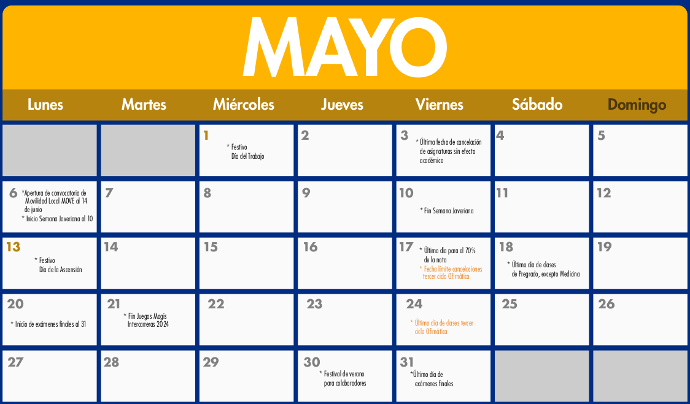
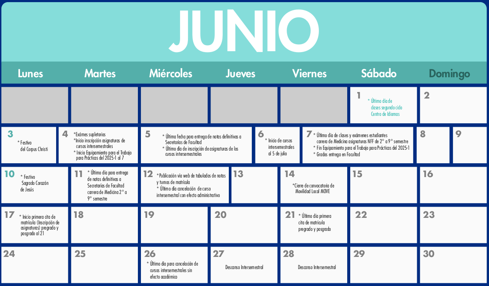

Código : 30MAE014
Departamento que la ofrece : Ciencias Naturales y Matemáticas
Área de conocimiento. Estadística -Matemáticas y Ciencias
Naturales
Nucleo básico de conocimiento : Estadística
Créditos : 3
Número total de horas : 144
Horas de clase semanales : 4
Horas de trabajo independiente : 5 (2 con monitor, 3 estudiante solo)
Prerrequisitos : Teoría de Probabilidad (300MAE013)
Correquisitos : ninguno
Asignaturas equivalentes : ninguna
Modalidad : Presencial
Idioma en que se imparte : Español
En el curso se abordan el muestreo y las bases de para que el estudiante aplique la inferencia estadística usando estimación puntual, intervalo de confianza y prueba de hipótesis como también la estimación de valores de una variable de respuesta y de valores futuros con el modelo de regresión lineal simple y el análisis de varianza para la comparación de media en un diseño de experimentos.
Se fortalecerán competencias en resolución de problemas, en comunicación y computacionales que permitan fundamentar las bases y el pensamiento estadístico para aplicar los métodos inferenciales en diversos contextos. Se adoptan metodologías de aprendizaje y evaluación acordes con la metodología estadística, la definición de hipótesis, postulación de modelos y el diseño de experimentos, como el estudio de casos, la simulación, el uso de software y el desarrollo de proyectos temáticos a lo largo del curso.
(2 semanas)
Introducción al muestreo. Tipos de muestreo.
Estimador puntual. Propiedades: insesgadez, consistencia y eficiencia relativa.
Método de momentos y de máxima verosimilitud
Valor esperado y varianza de la media muestral y de la proporción muestral.
Distribución de probabilidad de la media muestral y de la proporción muestral: Teorema del límite central.
Distribución de probabilidad de la diferencia de medias muestral y de la diferencia de proporciones muestrales.
(4 semanas)
Límites de confianza, nivel de confianza, error de estimación.
Intervalo de confianza para la estimación de la media.
Límites de predicción y de tolerancia.
Intervalo de confianza para la estimación de la proporción y varianza en una población.
Tamaño de muestra para la estimar la media y la proporción por intervalo de confianza.
Comparación de dos poblaciones a partir de sus medias, proporciones y varianzas usando intervalos de confianza.
(5 semanas)
Introducción a la prueba de hipótesis: Hipótesis nula y alternativa, nivel de significancia, errores tipo I y tipo II, potencia.
Prueba de hipótesis para el parámetro de una población: media, proporción y varianza. Valor p en la toma de decisiones.
Prueba de hipótesis de dos poblaciones.
Prueba Chi cuadrado para homogeneidad y pruebas de bondad de
ajuste
Pruebas no paramétricas
(2 semanas)
Introducción a la regresión lineal, análisis de correlación lineal. Supuestos en la regresión.
Modelo de regresión lineal simple: Estimación por mínimos cuadrados, análisis de varianza, validación de supuestos,
Introducción al Modelo de Regresión Lineal múltiple: Modelo, criterios de selección del modelo. Supuestos
(3 semanas)
Introducción al diseño de experimentos: Factor, nivel, tratamiento, repetición.
Modelo de ANOVA para uno y dos factores
Comparaciones múltiples
El fortalecimiento de las competencias se logrará mediante lecturas y ejercicios previos a la clase, presentación, por parte del profesor, de conceptos, técnicas y métodos, apoyado en medios audiovisuales, tablero y computador. Talleres de refuerzo para trabajar fuera de clase. Asesoría de distintos profesores en horarios de atención planeados en el departamento que brinda el curso. Talleres temáticos que los estudiantes resuelven con el acompañamiento semanal de un monitor. Laboratorios de cómputo y proyectos de aplicación temática donde los estudiantes en grupo identifican una situación crítica a partir de la cual presentan un proyecto en cuyo desarrollo analizan y resuelven problemas sencillos con la aplicación de métodos y software estadístico.
| Actividades porcentajes | Número de actividades | porcentaje por actividad | Porcentaje Total por actividad |
|---|---|---|---|
| Exámenes | 3 | 20 | 60 |
| Quices | 3 | 5 | 15 |
| Laboratorio | 3 | 5 | 15 |
| Proyecto | 1 | 10 | 10 |





